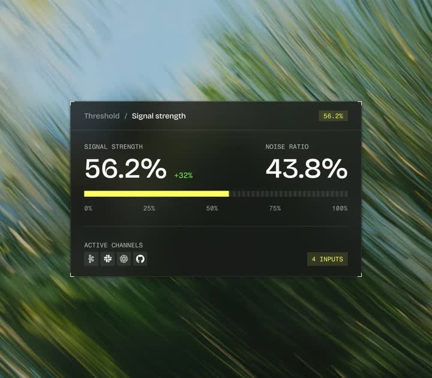
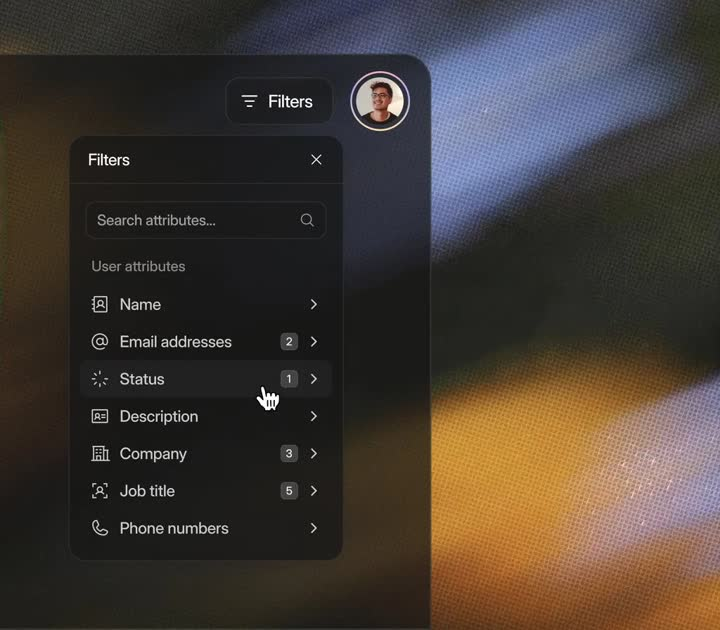
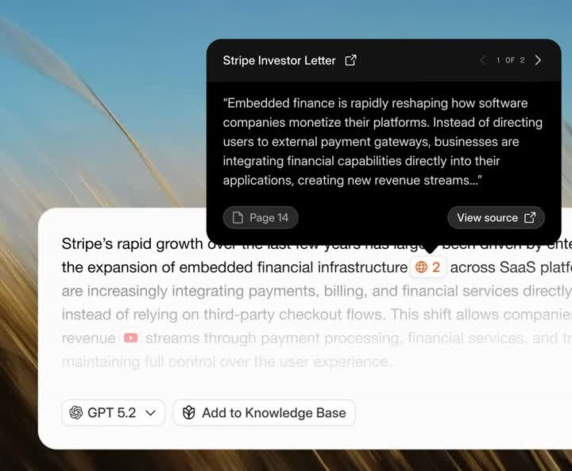

Static 4-slide set of polished dark-mode product UI comps (no motion): audio signal dashboard, CRM filters panel, command-K search palette, AI chat citation popover. The deliverable is pixel-faithful UI recreation.
Media
Frame-by-frame



slide 1
'Threshold / Signal strength' dark panel over a motion-blurred grass photo: huge 56.2% / 43.8% numerals, +32% delta chip, yellow segmented progress bar with tick labels 0-100%, ACTIVE CHANNELS row with 4 small icons and a '4 INPUTS' chip. Corner reticle marks on the panel.
slide 2
Dark 'Filters' slide-over panel over a blurred warm photo: search field, 'User attributes' rows (Name, Email addresses x2, Status x1, Description, Company x3, Job title x5, Phone numbers) each with icon, count chip, chevron; close X top-right; Filters button + avatar above.
slide 3
Glassy command palette over a wheat-field photo: 'Search customers' input with CMD+K chip, RECENT group (2 rows with avatar+presence dot+email), ALL USERS group (4 rows), footer kbd hints (# tags, arrows navigate, enter open, esc close).
slide 4
AI answer card over article text with inline citation chips; black citation popover 'Stripe Investor Letter' with quoted excerpt, '< 1 of 2 >' pager, 'Page 14' and 'View source' buttons; model picker 'GPT 5.2' and 'Add to Knowledge Base' buttons below.
Build prompt
Rebuild these 4 static product UI comps 1:1, pixel-faithful. This is a fidelity exercise, not a motion piece: dark-mode marketing screenshots of (1) an audio signal dashboard, (2) a CRM filters panel, (3) a command-K palette, (4) an AI chat citation popover.
## Stack
React + TypeScript + Tailwind. Dark theme throughout (near-black surfaces, white/zinc text). No animation required; static fidelity is the deliverable.
## Scene
- Comp 1 - "Threshold / Signal strength": dark panel floating over a motion-blurred grass photo. Huge numerals 56.2% / 43.8%, a +32% delta chip, yellow segmented progress bar with tick labels 0-100%, an ACTIVE CHANNELS row with 4 small icons and a "4 INPUTS" chip, corner reticle marks on the panel.
- Comp 2 - "Filters" slide-over: dark panel over a blurred warm photo. Search field; "User attributes" rows (Name, Email addresses x2, Status x1, Description, Company x3, Job title x5, Phone numbers) each with icon, count chip, chevron; close X top-right; Filters button + avatar above.
- Comp 3 - command palette: glassy panel over a wheat-field photo. "Search customers" input with a CMD+K kbd chip; RECENT group (2 rows: avatar, presence dot, email); ALL USERS group (4 rows); footer kbd hints (# tags, arrows navigate, enter open, esc close).
- Comp 4 - AI answer card over article text: inline citation chips; black citation popover "Stripe Investor Letter" with quoted excerpt, "< 1 of 2 >" pager, "Page 14" and "View source" buttons; model picker "GPT 5.2" and "Add to Knowledge Base" below.
## Motion spec
None. If you add anything, restrict it to a 120ms hover background on interactive rows (zinc-950/40 equivalent on dark).
## Calibration
- Typography carries these comps: semibold titles, zinc-500 secondary, mono for numbers and kbd hints; tight tracking on the big numerals.
- Glass panels: backdrop-blur over photo backgrounds, border white/10, never solid gray.
- kbd chips: small radius, 1px border, mono 11px.
## Reduced motion
N/A - static comps.
## Don't miss
- Photo backdrops are part of the comps - panels must float over them with real blur, not flat fills.
- Corner reticle marks on comp 1 and the presence dots in comp 3 are the details people notice.
- Numbers use tabular-nums so the big numerals don't jitter between variants.